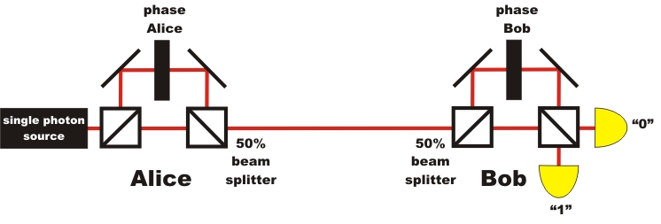
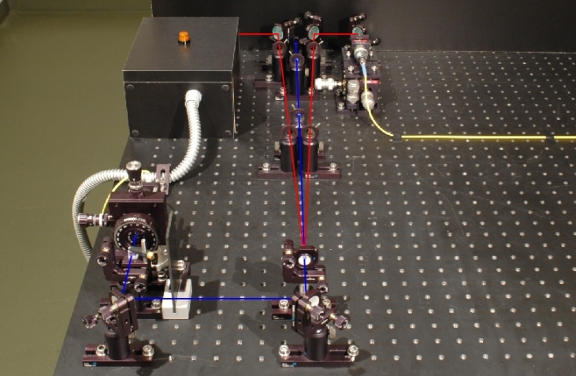

Quantum cryptography chapter 4:
Flow, research and single photon source
In the last chapter on code distribution with two bases it is shown that the system with single photons offers 100% security because of the possible detection of spies. On this page, the basic knowledge of the preceeding chapters is furthered in brief sections.
Furthering of basic knowledge: Section 1: The precise flow of quantum cryptography Section 2: From the first proposal to current research Section 3: Connection via open jet section or glass fibre cable? Furthering of advanced knowledge: Section 4: Encoding the photons with the phase Section 5: The single photon source in the demonstration experiment Section 6: Coincidences in the demonstration experiment
Section 1: The exact process of quantum cryptography
In order to make quantum cryptography secure from the start, the following procedure for the BB84 protocol must be complied with precisely:
Step 1 Authentification Step 2 Code transmission Step 3 Deleting faulty bases Step 4 Testing for spies Step 5 Filtering of errors Step 6 Code for authentication Step 7 Encoding the message Step 8 Sending the message Step 9 Decoding the message Bob decodes the secret message with his code by binary addition. If the procedure above was complied with in all manners, the encoding was 100% secure.
Steps 1-6 only serve for generating the secret code using quantum physics. As, at the beginning of the authentication process, a part of the code is always transmitted (step 1), this process is really only a code growth. It is only in steps 7-9 that the real cryptography takes place, where quantum physics is no longer required. The entire system can be operated fully automatic by means of quantum random generators and electro-optical polarization rotators. The data rate in the commercially available quantum cryptography systems with fiber glass cables currently is ca. 1,5 kBit/s [IdQ08] at a range of 25km.
Section 2: From the first proposition to current research
The first theoretical proposition on quantum cryptography was published by the scientists Bennet and Brassard [Ben84] in 1984. The proposition has since then been known as the BB84 protocol. In 1992, the suggested protocol was realized experimentally for the first time with an open jet passage of 30cm [Ben92]. As early as in 2001, a system with a coverage of 1.9km and a raw data rate of 33kBit/s was tested [Rar01]. In 2002, a group of scientists from Munich succeeded in transmitting the key securely from the Zugspitze mountain top [Kur02]. The transmission distance was 23.4 km in clear mountain air with no turbulences. The same system was tested in 2006 over the rooftops of Munich in turbulent and polluted city air at a transmission distance of 480m [Wei06]. In 2007, the safe key distribution was successfully carried out between the islands of La Palma and Tenerife [Sch07]. The transmission distance here was 144km through clear sea air.
Section 3: Connection via open jet passage or fiber glass cable?
The quantum cryptography systems described before used polarization (vertically polarized = 0, horizontally polarized = 1) for the encoding process. The systems worked flawlessly in free and direct line of sight between sender and receiver. If heavy fog, plenty of dust or smog was in the air, most photons were diffused during transmission and no longer reached the receiver. By these natural environmental impacts, the cryptography systems are greatly limited regarding the transmission rate or are even rendered completely inoperative. For everyday communication, the transmission passage should be independent of environmental impacts. Most suitable for this are fiber glass cables which can be run underground. Normal fiber glass cables do, however, have the awkward characteristic that the polarization does not remain the same. Depending on the bending or stretching of the fiber glass, the polarization of light changes. For quantum cryptography with polarization encoding, freely run fiber glass cables are therefore not suitable. An eligible alternative is the encoding of photons over the phase, as it does not change in the fiber glass cable. The steps described in the upper section on the process of quantum cryptography remain the same for phase encoding as they were for polarization encoding.
Advanced skills:
Section 4: Encoding the photons via the phase
Instead of encoding photons by polarization, we can also use the phase φ for encoding the photons. The system for quantum cryptography via the phase φ works with the quantum phenomenon single photon interference in the interferometer. For quantum cryptography with phase encoding, a large Mach-Zehnder interferometer is split up into two interferometers. One interferomteter is placed on Alice's side, the other on Bob's side (pic. 1). In each interferometer, the phase is altered via an additional optical element in an interferometer arm.
The phase difference Δφ = φAlice - φBob of the two interferometers is used for the unambiguous information transmission. The phase difference Δφ=0 correlates with the binary "0", the phase difference Δφ=π correlates with the binary "1". The complete system of quantum cryptography via the phase requires precise interferometric stability.

pic. 1: Quantum cryptography with single photons and phase encoding
As the phase of single photons is not altered in a fiber glass, the transmission between Alice and Bob can be carried out in a normal fiber glass cable. A direct line of sight like with polarization encoding is not needed. Leadoff systems were tested in Switzerland between the cities of Lausanne and Geneva in 2002 [Stu02]. The fiber glass cable between the cities had a length of 67km in this experiment. Plug-and-play systems for quantum cryptography via the phase are already commercially available with fiber glass cables today [IdQ08]. In Switzerland, those systems are already in serial use for transmitting important information [Pat07].
Apart from the quantum cryptography systems with one single photon each, as described here, there are also systems of quantum cryptography with entangled photon pairs [Eke91] or with continuous variables [Ral00]. Quantum cryptography with entangled photon pairs is discussed in detail in the next chapter (chapter_5). A technically complex and very good overview of the systems of quantum cryptography and the current state of the art is given in the articles of Gisin and Tittel [Gis02] or by Lo and Lütkenhaus [Lo07].
Section 5: The single photon source in the demonstration experiment
The security of quantum cryptography systems is only guaranteed if per pulse one single photon is transmitted. The single photon source at the push of a button is, however, still a matter of intensive research. For our demonstration experiment of quantum cryptography (see chapter 2 and 3), we use a photon pair source which announces single photons via a trigger (pic. 2). This photon pair source is described in detail, mentioning the exact photon statistics, in the chapter existence_of_the photons. One photon of the photon pair from the crystal is used for triggering, while the other photon is coupled into a polarization-maintaining fiber glass cable and lead to the actual quantum cryptography system. In our experiment, the blue-pulsed laser (405nm), on the push of a button, sends a single pulse for generating the photon pairs. After each individual laser pulse, the direction of the polarization rotator in the quantum cryptography system has to be newly adjusted, as there could always be a photon at hand. For the interactive experiments, all datasets which did not have any coincidence events were deleted. Alternatively, the announced single photon source can be replaced by a single photon source with a color center [Bev02].

pic. 2: Photon pair source for quantum cryptography
left branch: detector for triggering, right branch: coupling into the fiber glass cable
For the experiments mentioned in the section above, with open jet passages of up to zu 144km, diminished laser pulses are used for the BB84 protocol. These individual laser pulses can, however, include two or more photons. A spy could extract single photons from each transmitted pulse using a beam splitter, completely unnoticed, and measure it. The safety of secure key transmission is massively infringed upon due to this beam splitter attack. Possible solutions to the beam splitter attack problem are decoy state protocols. With these decoy state protocols, normal pulses for information transmission are sent along with additional pulses. These additional pulses help detect such a beam splitter attack [Hwa03], [Zha06], [Mau07], e.g. by measuring the photon statistics.
Section 6: Coincidences in the demonstration experiment
In our interactive demonstration experiment on quantum cryptography (see chapters 2 and 3), each photon sent is registered. This is achieved in our real demonstration experiment by having the blue 405nm laser in front of the crystal send out single pulses after activating the pushbutton "single measurement" until a coincidence is registered between the detector trigger and the detector behind the beam splitter. After that, the pulsed laser switches into idle mode and can be started again with the pushbutton. The coincidence measured is shown via lamps on the detectors. If the laser were to send out only a single light pulse at each activation of the pushbutton, very often there would be no coincidence, or only a single detection at the trigger detector or at the detectors behind the beam splitter. The lamps would remain dark for most single pulse pushbutton-strokes. This is due to the minor conversion efficiency in the crystal, as well as to the suboptimal coupling into the fiber glass cable, to the diffusion of the photons on the transmission route and to the substandard detector efficiency. For the correct use, after each laser pulse the direction of the polarization rotator must be randomly changed. In order to make the principle of quantum cryptography generally understandable, we bypass these problems by recurring laser pulses until we get a coincidence.
To chapter 5: Quantum cryptography with entangled photons
Back to overview [klick]
Autor: P. Bronner, August 2008
Translation: G. Murphy